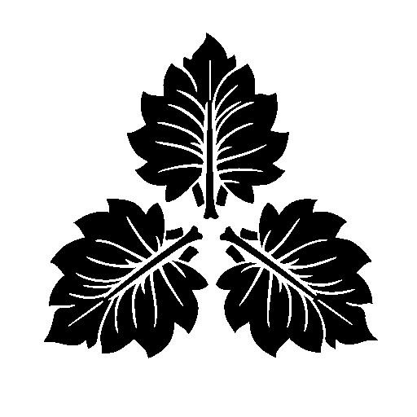

ナシゴレン国・紋章
ナシゴレン国国歌斉唱
ナシゴレンに栄光あれ
ナシゴレン国代表挨拶
この度は、当サイトをご覧くださり誠にありがとうございます。
ナシゴレン国では、Discordアプリを用いてメイン活動をしております。
当サイトでは、活動内容や新着情報などを発信する場として設けます。
代表は、太政大臣を務めます、ナシゴレン√家西と申します。
家西は、ナシゴレン国憲法の作成と改正、メンバーの総括に務めてまいります。
応援の程、よろしくお願いします。
ナシゴレン国について
ナシゴレン国では、楽しく・平和にをモットーにして、雑談・通話活動をしております。
多くの方々が参加をしてくださり、大変盛り上がっております。
また、数々のロール（役職）がございます。会議を開き随時決定していく所存です。
ナシゴレン国憲法
第一章 ナシゴレン国
第一条 ナシゴレン国は、2025年5月16日に建国された。
第二条 ナシゴレン国は、5月16日を建国記念日とする。
第二章 将軍
第三条 将軍は、武人出身者にこの称号を与える。
第四条 将軍は、好きな都道府県に幕府を開設できる。
第三章 宗家
第五条 宗家は、嫡流の家を指す。将軍職に就くことができる。
第六条 宗家は、子孫を指名し、将軍職を継承することができる。
第四章 御三家
第七条 御三家は、宗家が親戚を指名し、三名を副将軍、大老、老中に指定できる。
第八条 御三家は、宗家と対等の立場で会話ができる。
第五章 親藩
第九条 親藩は、幕政上重きをなし、幕府と最も近い関係を持つ。
第十条 親藩は、定員10名とする。
第六章 譜代
第十一条 譜代は、幕府に忠誠を抱き、親藩の次に近い関係を持つ。
第十二条 譜代は、親藩に反感を抱かれた場合、降格し、次項の外様となる。
第七章 外様
第十三条 外様は、幕府には敵対視される存在。しかし、譜代に昇進も可能である。
第十四条 外様は、譜代としか会話が許されない。
第八章 公家衆
第十五条 公家衆は、以下の役職が存在する。
家西：太政大臣
イ 左大臣
ロ 右大臣
ハ 内大臣
二 大納言
ホ 中納言
ヘ 参議
第十六条 公家衆は、話し合いのもと、好きな場所に拠点を置く。
第九章 会議
第十七条 会議は、武家と公家衆とで原則分かれる。
第十八条 会議は、全体会議の際は、公武関係なく行い、公家衆が告知する。
附則
ナシゴレン√家西が2025年5月16日に制定。